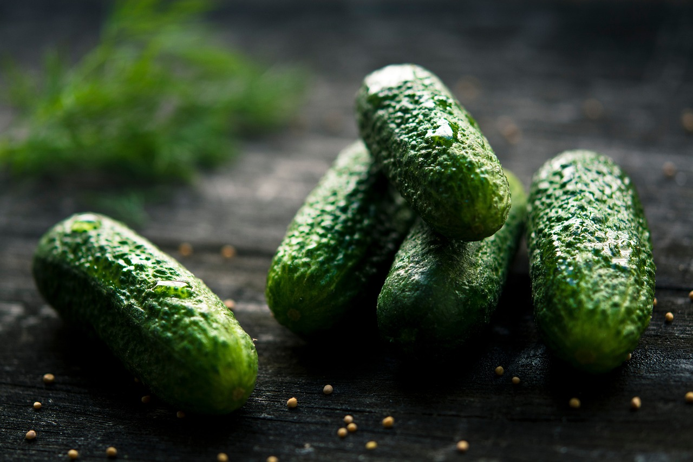

Agridera Fresh Market Cucumbers
Agridera aims to be one of the world’s leading companies in the breeding, production, and marketing of vegetable seeds. We invest intensively in research and development to provide solutions to growers and consumers in numerous countries around the world.
Fresh market cucumber varieties are selected for early maturity, stable yield, attractive appearance, disease resistance and excellent taste qualities. Special attention is given to adaptability in different growing conditions.
In terms of horticultural traits, breeding is focused on fruit uniformity, насыщенный green color, crisp texture, transportability, shelf life and strong plant vigor for open field and greenhouse production.
Greenhouse Cucumber Program
This segment includes vigorous and early cucumber hybrids intended for greenhouse production with stable fruit setting, uniform shape and high productivity.
Open-field Cucumber Hybrids
These hybrids are adapted for open-field growing conditions and demonstrate reliable yield, stress resistance and excellent fruit quality.
Universal Purpose Cucumbers
This breeding direction combines fresh market quality with suitability for pickling and preservation, making the products versatile for consumers.